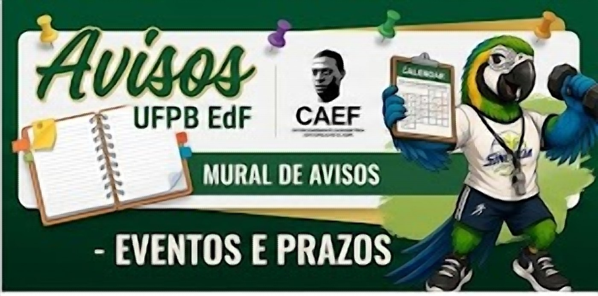
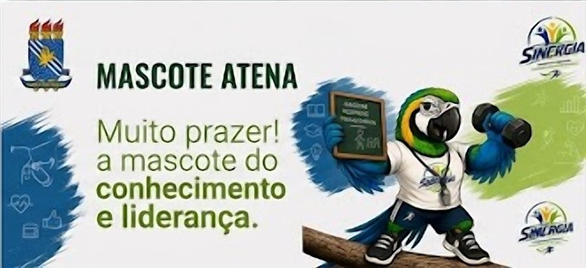

📌 Prazo
Matrícula em componentes optativos abre segunda-feira
Fica de olho: as vagas em disciplinas de outros cursos (CCS e CCHLA) mapeadas no site costumam esgotar rápido. Confira as trilhas antes de escolher.
Grades curriculares completas do Bacharelado e da Licenciatura, com um mapeamento de disciplinas de saúde (CCS/CCM) e de humanidades (CCHLA) que ampliam a formação de ambos os cursos — acadêmica e profissionalmente.
Ponto de partida
Os dois cursos compartilham o tronco de ciências do movimento, mas divergem no destino profissional: um forma para clínica, esporte e academia; o outro, para a sala de aula.
| Aspecto | Bacharelado | Licenciatura |
|---|---|---|
| Carga horária total mínima | 3.255h | 3.135h |
| Carga horária obrigatória | 2.790h | 2.745h |
| Carga horária optativa mínima | 255h | 240h |
| Foco pedagógico | Ausente — foco técnico, saúde e esporte | Didática, Psicologia da Aprendizagem, Política e Gestão da Educação, Libras obrigatória |
| Estágios | 3 estágios em esportes, atividade física, lazer e saúde | 3 estágios em docência escolar |
| Atuação típica | Academias, clubes, personal training, esporte de rendimento, saúde/clínicas | Escolas de educação básica, gestão escolar, EF adaptada em contexto educacional |
Carga horária por nível
Composição da carga horária mínima
Comparar disciplinas nível por nível

Fique por dentro
Prazos, editais, eventos da Atlética e novidades do CAEF/Sinergia — atualizado pela Diretoria de Ensino, Pesquisa e Extensão.
Fica de olho: as vagas em disciplinas de outros cursos (CCS e CCHLA) mapeadas no site costumam esgotar rápido. Confira as trilhas antes de escolher.
Inscrições abertas para futsal, vôlei e atletismo. Procure a comissão da Atlética no CCS.
Egressos do Bacharelado e da Licenciatura contam como foi a transição pro mercado. Auditório do CCS, 14h.
Traga suas demandas. Vamos discutir calendário de eventos do semestre e prestação de contas.
Vagas em disciplinas do núcleo comum. Edital completo no mural físico do departamento.
Programação com minicursos, mesas-redondas e apresentação de trabalhos. Inscrições em breve.

⚠️ Estes são avisos de exemplo — a Diretoria de Ensino, Pesquisa e Extensão deve substituir pelo conteúdo real antes de publicar.
Loja da Sinergia
Estamos organizando a vitrine de camisetas, ingressos de calourada e acessórios do curso. Assim que tiver data marcada e produtos definidos, vocês veem tudo aqui — com carrinho, filtro por categoria e finalização direto pelo WhatsApp ou PIX.
Fica de olho no Mural de avisos — o lançamento vai ser anunciado por lá.
Currículo 632007 · vigência 2008.1
8 níveis, do 1º ao 8º, mais um bloco de optativas de livre escolha (0º nível). Clique em cada volta do percurso para abrir as disciplinas.
Libras, Estágio Extracurricular, Atividades de Extensão, Teoria e Prática de Recreação e Lazer II, Capoeira, Tênis de Campo, Práticas Alternativas em EF, Metodologia do Treino do Atletismo, Aprofundamento em Fisiologia da Atividade Física, Atividades Físicas em Academia II, Metodologia do Treino da Natação/Judô/Dança/Ginástica Artística/Ginástica Rítmica/Futebol/Futsal/Handebol, Tópicos Especiais em Educação Física I–IV, Tópico Temático I — Pesquisa em Educação Física, Tópicos Temáticos V.
| Bioquímica Aplicada à Educação Física | 60h |
| Crescimento e Desenvolvimento | 60h |
| Produção e Veiculação do Conhecimento em EF | 60h |
| Fundamentos Didático-Pedagógicos do Esporte | 60h |
| Anatomia Aplicada à Educação Física | 75h |
| Fisiologia Humana I | 60h |
| Atletismo | 60h |
| Fundamentos Epistemológicos da EF | 45h |
| Fisiologia da Atividade Física (Bach) | 60h |
| Ginástica Artística | 60h |
| Fundamentos Históricos e Filosóficos da EF e do Esporte | 45h |
| Futebol | 60h |
| Nutrição e Atividade Física | 45h |
| Dança | 60h |
| Natação | 60h |
| Pesquisa Aplicada à Educação Física | 60h |
| Atividades Físicas em Academia I | 60h |
| Cinesiologia e Biomecânica Aplicada à EF | 60h |
| Handebol | 60h |
| Primeiros Socorros | 30h |
| Atividade Física e Saúde | 45h |
| Futsal | 60h |
| Treinamento Desportivo I | 60h |
| Medidas e Avaliação em EF I | 60h |
| Voleibol | 60h |
| Lazer e Sociedade | 45h |
| Análise e Interpretação de Dados em EF | 45h |
| Treinamento Desportivo II | 45h |
| Judô | 60h |
| Atividade Física e Terceira Idade | 45h |
| Atividades Físicas para Grupos Especiais | 60h |
| Aprendizagem e Controle Motor | 60h |
| Estágio Profissional Supervisionado em Esportes I | 105h |
| Sociologia do Desporto | 45h |
| Ginástica Rítmica | 60h |
| Ética Profissional na EF | 45h |
| Basquetebol | 60h |
| Prescrição de Exercícios Físicos | 60h |
| Desporto Adaptado | 60h |
| Administração e Marketing em EF | 45h |
| Estágio Profissional Supervisionado em Esportes II | 105h |
| Seminário de Monografia I — TCC I | 60h |
| Psicologia do Esporte | 45h |
| Organização e Gestão Desportiva | 45h |
| Musculação | 45h |
| Estágio Prof. Superv. em Atividade Física, Lazer e Saúde | 195h |
| Seminário de Monografia II — TCC II | 30h |
Currículo 632007 · vigência 2010.2
Mesma base de ciências do movimento, com trilho pedagógico adicional para a docência na educação básica.
Atividade de Extensão, Fundamentos da Administração da Educação, Educação Sexual, Antropologia da Educação, Fundamentos Biológicos da Educação, Economia da Educação, Avaliação da Aprendizagem, Educação e Movimentos Sociais, Seminário de Problemas Atuais da Educação, Alfabetização de Jovens e Adultos, Introdução aos Recursos Audiovisuais em Educação, Seminário em Educação Ambiental, Planejamento e Gestão Escolar, Currículo e Trabalho Pedagógico, Pesquisa e Cotidiano Escolar, Capoeira, Tênis de Campo, Práticas Alternativas em EF, Metodologia do Treino do Voleibol, Pedagogia do Ensino (Atletismo, Dança, Futebol, Natação, Ginástica Artística/Rítmica, Handebol, Voleibol, Futsal, Basquetebol), Tópicos Especiais em EF I–IV, Tópicos Temáticos I–VII.
| Fundamentos Psicológicos da Educação | 60h |
| Fundamentos Antropofilosóficos da Educação | 60h |
| Crescimento e Desenvolvimento | 60h |
| Produção e Veiculação do Conhecimento em EF | 60h |
| Anatomia Aplicada à EF | 75h |
| Libras | 60h |
| Atletismo | 60h |
| Fundamentos Epistemológicos da EF | 45h |
| Ginástica Artística | 60h |
| Futebol | 60h |
| Dança | 60h |
| Educação Física e Saúde | 30h |
| Fisiologia Humana I | 60h |
| Nutrição e Atividade Física | 45h |
| Didática | 60h |
| Fundamentos Históricos e Filosóficos da EF e do Esporte | 45h |
| Educação Física Infantil | 60h |
| Fisiologia da Atividade Física (Lic) | 60h |
| Natação | 60h |
| Ginástica Rítmica | 60h |
| Primeiros Socorros | 30h |
| Pesquisa Aplicada à EF | 60h |
| Cinesiologia e Biomecânica Aplicada à EF | 60h |
| Handebol | 60h |
| Voleibol | 60h |
| Aprendizagem e Controle Motor | 60h |
| Ética Profissional na EF | 45h |
| Didática Aplicada à EF | 45h |
| Fundamentos Sócio-Históricos da Educação | 60h |
| Psicologia da Aprendizagem | 60h |
| Futsal | 60h |
| Medidas e Avaliação em EF I | 60h |
| Análise e Interpretação de Dados em EF | 45h |
| Judô | 60h |
| Estágio Profissional Supervisionado I | 150h |
| Treinamento Desportivo I | 60h |
| Basquetebol | 60h |
| Manifestações Culturais | 45h |
| Pedagogia do Lazer | 45h |
| Estágio Profissional Supervisionado II | 150h |
| Política e Gestão da Educação | 60h |
| Organização de Eventos e Competições Escolares | 30h |
| Educação Física Especial | 45h |
| Seminário de Monografia I — TCC I | 60h |
| Estágio Profissional Supervisionado III | 105h |
| Seminário de Monografia II — TCC II | 30h |
Mapeamento temático — não é aproveitamento formal de créditos
Disciplinas de outros 9 cursos do CCS/CCM que ampliam a formação do egresso de Educação Física — mais voltadas ao Bacharelado (clínica, esporte, saúde), mas também aproveitáveis pela Licenciatura.
Mapeamento temático — foco em incluir a Licenciatura
O bloco de saúde acima pesa mais para o Bacharelado. Aqui estão disciplinas de Psicologia, Serviço Social, Ciências Sociais (Licenciatura), Filosofia (Licenciatura) e Letras-Libras que reforçam exatamente o que a Licenciatura em Educação Física mais precisa: pedagogia, psicologia da aprendizagem, inclusão e gestão escolar.
também Bacharelado marca disciplinas que também interessam a quem faz o Bacharelado — seja para pesquisa (antropologia e sociologia do esporte, avaliação, gerontologia) ou para atuação prática (categorias de base, inclusão, projetos comunitários).
Componentes flexíveis
Descubra seu caminho
Escolha o que mais te atrai hoje e veja um caminho sugerido de disciplinas — sem compromisso, é só um ponto de partida.
Sugestão pra você
Ver a trilha completa →Síntese
Realização
Diretoria de Ensino, Pesquisa e Extensão
Este mapeamento foi realizado pela Diretoria de Ensino, Pesquisa e Extensão da gestão Sinergia, atual gestão do CAEF — Centro Acadêmico de Educação Física João Carlos de Oliveira, como material de apoio para estudantes de Educação Física da UFPB.